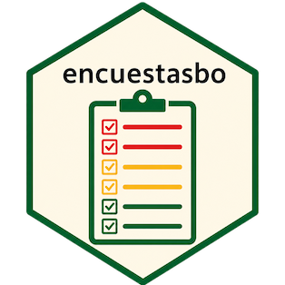

La Encuesta de Hogares: pobreza, ingresos y empleo
Source:vignettes/encuesta-hogares.Rmd
encuesta-hogares.RmdLa Encuesta de Hogares (EH) del INE es la principal
fuente de medición de la pobreza por ingresos en Bolivia.
encuestasbo cubre 2012–2024 (niveles
persona y vivienda) con armonización entre años y análisis con diseño
muestral.
Para el contexto metodológico oficial de cada año (marco muestral, factor de expansión, tamaño de muestra), consulta la ficha técnica:
library(encuestasbo)
ficha_tecnica("eh", 2023)Todos los análisis serios deben usar el diseño
muestral (diseno_eh() + srvyr), no
medias crudas. Ver también vignette("diseno-muestral").
Pobreza
La pobreza viene calculada por el INE (pobre,
pobre_extremo); el paquete la expone con nombres canónicos
tras armonizar_eh() (que diseno_eh() aplica
por defecto).
# Pobreza nacional y extrema, 2023, con intervalos de confianza
diseno_eh(2023) |>
summarise(
pobreza = survey_mean(pobre, na.rm = TRUE, vartype = "ci"),
pobreza_extrema= survey_mean(pobre_extremo, na.rm = TRUE, vartype = "ci")
)
# Pobreza por área y por departamento
diseno_eh(2023) |>
group_by(area) |>
summarise(pobreza = survey_mean(pobre, na.rm = TRUE))
diseno_eh(2023) |>
group_by(depto) |>
summarise(pobreza = survey_mean(pobre, na.rm = TRUE, vartype = "cv"))Ingresos
# Ingreso medio del hogar por área (Bs/mes)
diseno_eh(2023) |>
group_by(area) |>
summarise(ingreso_hogar = survey_mean(ingreso_hogar, na.rm = TRUE))
# Ingreso laboral medio por sexo
diseno_eh(2023) |>
filter(!is.na(ingreso_laboral), ingreso_laboral > 0) |>
group_by(sexo) |>
summarise(ingreso_laboral = survey_mean(ingreso_laboral, na.rm = TRUE))Educación
# Años de estudio promedio por área (población de 19+ años)
diseno_eh(2023) |>
filter(edad >= 19) |>
group_by(area) |>
summarise(anios_estudio = survey_mean(anios_estudio, na.rm = TRUE))Evolución entre años
get_eh_armonizada() apila varios años; combínalo con el
diseño para series ponderadas comparables.
# Serie de pobreza ponderada 2018–2024
anios <- c(2018, 2019, 2021, 2022, 2023, 2024)
serie <- lapply(anios, function(y) {
est <- diseno_eh(y, verbose = FALSE) |>
summarise(pobreza = survey_mean(pobre, na.rm = TRUE))
data.frame(anio = y, pobreza = est$pobreza)
})
do.call(rbind, serie)Comparabilidad: cambios de cuestionario, de clasificadores (COB/CAEB) y de marco muestral (Censo 2012 → 2024) afectan la comparabilidad fina entre años. Para subgrupos pequeños evalúa el coeficiente de variación (
vartype = "cv"), como recomienda el INE.